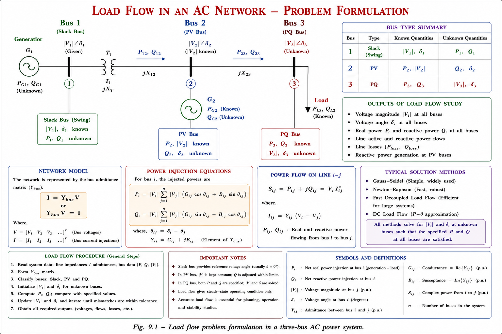
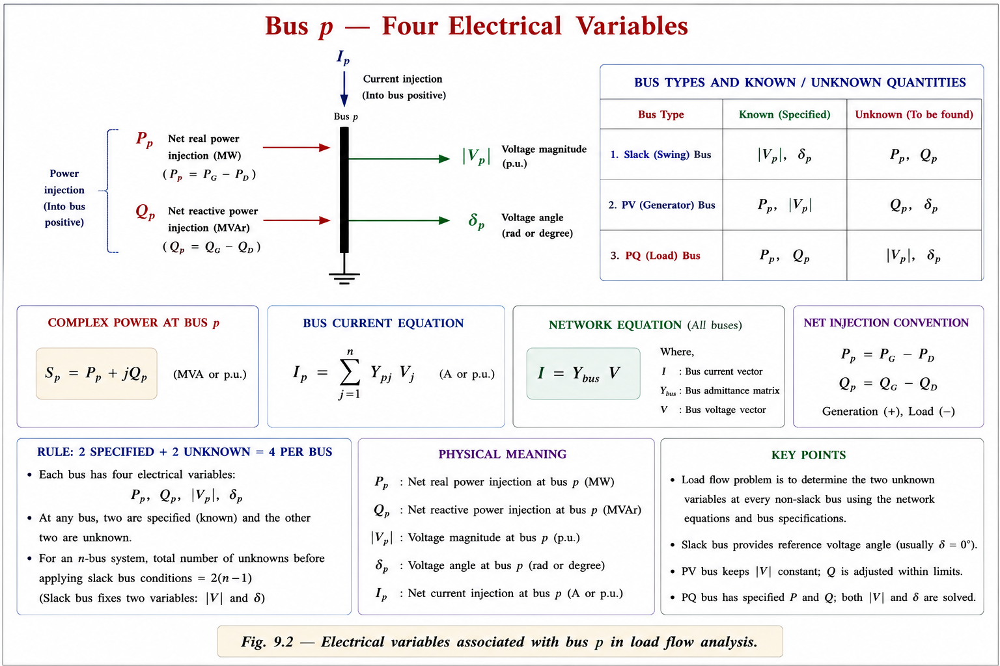
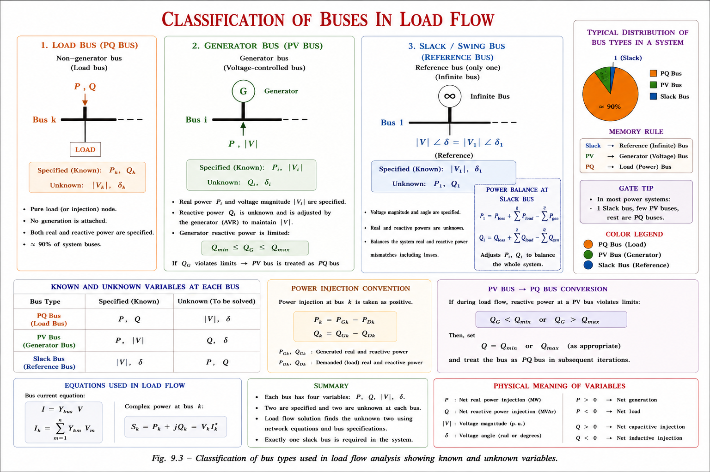
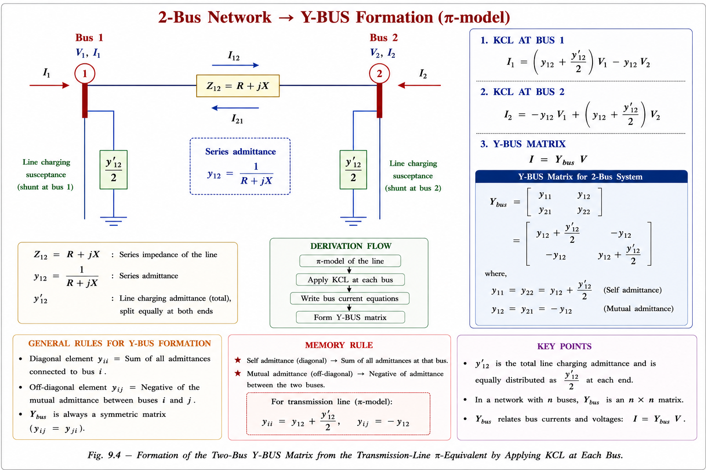
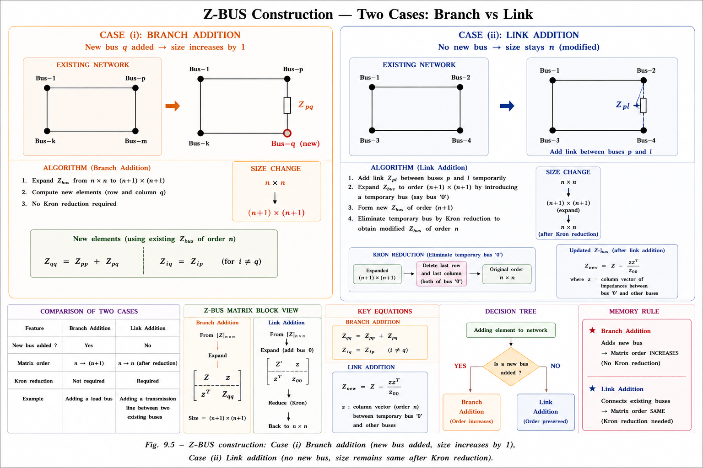
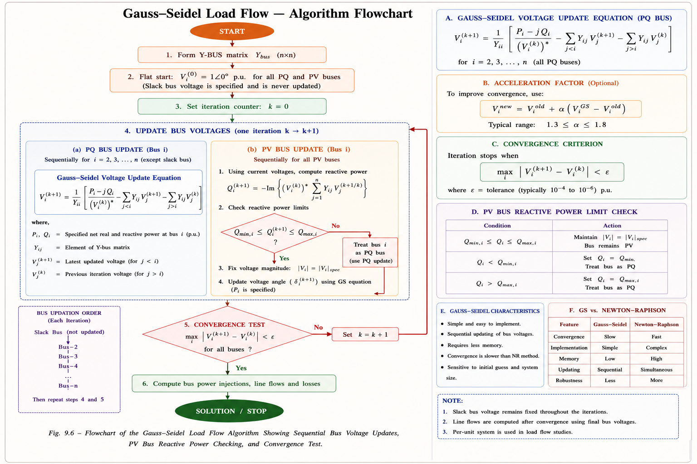

Bus classification, Y-BUS formation, Z-BUS construction, Gauss-Seidel and Newton-Raphson methods — complete conceptual and mathematical treatment for GATE EE, IES, and PSU examinations with fully solved numericals and previous year questions.
Imagine you are the chief engineer of a state electricity board. The demand grows each year. You need to know: can our existing network supply this demand without violating any voltage or thermal limits? This is precisely what a load flow study — also called power flow study — answers.
Load flow study is the numerical solution of the steady-state operating conditions of a power system. Given specified generation and load data, it determines the voltage magnitude and phase angle at every bus, and thereby computes all active and reactive power flows in the network.

The system is modelled in balanced, steady-state, three-phase form. Each bus is represented by its equivalent single-line (phase) diagram. The load flow equations are nonlinear algebraic equations (not differential equations) because we are at steady state — and this is the fundamental challenge requiring iterative numerical solution.
Load flow deals with steady-state conditions. Transient stability (rotor swing equations — differential), short-circuit (fault analysis), and small-signal stability are separate studies. GATE frequently tests whether students can distinguish these — load flow gives Δpₑ ≈ 0 (small steady load variations ignored).
In a power system, each bus (node) is completely described by four electrical quantities. The entire load flow problem is about determining the unknown two from the known two at each bus.

For an n-bus power system, there are 4n variables total. Load flow equations provide 2n nonlinear equations. With 2 quantities specified at each bus, the system has 2n unknowns and is fully determined (in theory). The slack bus is special — it specifies both |V| and δ, supplying whatever P and Q is needed to balance losses.
These are simply KCL applied at each bus, converted from currents to powers using \(S_p = V_p I_p^*\). The nonlinearity arises from the product of voltage magnitudes and the trigonometric terms — which is why iterative methods are needed. A linearised version would give an easy matrix solution, but real power systems have significant nonlinearities that cannot be ignored.
Based on which two of the four variables are specified, buses are classified into three types. Understanding this deeply is essential — it is the most frequently tested conceptual topic from load flow in GATE and IES.

| Bus Type | Specified (Known) | Unknown (Find) | Typical % | Physical Description |
|---|---|---|---|---|
| Load Bus (PQ) | \(P_D, Q_D\) | \(|V|, \delta\) | ~90% | Pure load; no generator; voltage floats |
| Generator Bus (PV) | \(P_G, |V|\) | \(Q_G, \delta\) | ~10% | AVR holds voltage; governor sets real power |
| Slack/Swing Bus | \(|V|=1\angle0^\circ\) | \(P, Q\) | 1 bus | Absorbs P/Q imbalance including line losses |
| Voltage-Controlled Bus | \(P, |V|\) | \(Q=0\) (net) | Special | Shunt capacitor/reactor + slack; net Q=0 |
Students often wonder: why can't we specify P and Q for all buses? The answer lies in a fundamental problem of power system physics — line losses are unknown before the load flow is solved.
In balanced steady-state: Generation = Load + Losses. But \(P_L = I^2 R\) requires current, which requires voltages — which are unknown before solving! The slack bus acts as a "power buffer" that automatically supplies whatever P and Q is needed to satisfy KCL everywhere, including all losses.
The slack bus absorbs P and Q imbalances due to losses. A small generator might not have enough generation capacity to supply these — it would violate its limits and the load flow would diverge. The largest generator has the widest P and Q operating range, so it can tolerate the widest variation in unknown generation, making the solution more robust.
The Y-BUS matrix is the mathematical backbone of load flow. It captures how every bus is connected to every other bus through the network admittances. Think of it as the "connectivity fingerprint" of the power system.
Imagine buses are cities. Y-BUS is like a toll-road connectivity map: the diagonal entry (self-admittance) at city A is the total "connectivity" of all roads meeting at A. The off-diagonal entry between A and B is the negative of the direct road admittance from A to B. If there's no road → entry is zero → sparse matrix!

When there are no shunt elements at any bus (no capacitors, inductors, or ground connections), the sum of every row of Y-BUS = 0. This means the determinant = 0 → singular matrix. Physical meaning: without any path to ground, the voltage reference is undefined, so the node voltages cannot be uniquely determined. Shunt elements break this singularity.
In a real power system with hundreds or thousands of buses, the Y-BUS matrix has a special structure that makes it computationally efficient to handle: it is sparse.
In a large power system network, each bus is typically connected to only 2–5 other buses, not to all n buses. So for an n-bus system with n² possible entries, the vast majority of off-diagonal entries are zero. In practice, 90% or more of a large Y-BUS is zero — this is called a sparse matrix.
Size of Y-BUS = 20 × 20 = 400 elements
Key insight: Each transmission line between two buses contributes exactly 2 non-zero off-diagonal entries (Y_pq and Y_qp). So divide mutual count by 2.
| Property | Y-BUS | Z-BUS |
|---|---|---|
| Memory requirement | Low (sparse) | High (full matrix) |
| Primary use | Load flow studies | Short circuit / fault studies |
| Shunt elements | Included | Ignored (short circuit) |
| Sparsity | 90%+ zero | Mostly non-zero |
| Symmetry | Symmetric | Symmetric |
| Relation | \(Z_{BUS} = Y_{BUS}^{-1}\) (but this destroys sparsity!) | |
A key practical advantage of Y-BUS is that additions and removals of network elements require only local changes — the rest of the matrix remains unchanged. This makes contingency analysis (what if a line is removed?) extremely efficient.
Adding any admittance element always increases the self-admittance entries of the buses it connects. Removing an element decreases them. Mutual admittances are always the negative of the added element's admittance. If connecting to the reference (ground), only self-admittance changes.
While Y-BUS is used for load flow, Z-BUS is used for short-circuit (fault) current calculations. The diagonal element Z_pp gives the Thevenin impedance seen at bus p, which directly gives the fault current: \(I_f = V/Z_{pp}\).
In Y-BUS: all buses are considered simultaneously (KCL at all nodes at once). In Z-BUS construction: one element is added at a time, starting from the reference bus. This is because a fault at one bus affects voltages everywhere — so single-element-at-a-time construction captures this coupling systematically.

For a 3-phase symmetrical fault at bus k, the fault current is:
Pre-fault voltage \(E_{R1} = 1.0\) p.u. (assume flat start)
For fault at Bus 2: use \(Z_{22} = 0.2\) p.u. (diagonal element)
Key rule: Fault current at bus k = pre-fault voltage ÷ Z_kk (Thevenin impedance at bus k). This is why Z-BUS is essential for fault analysis.
The Gauss-Seidel (GS) method solves the load flow equations iteratively, updating one bus voltage at a time using the most recently computed values. It is simple to program but converges slowly for large systems.
Imagine adjusting voltages bus by bus in a round-robin fashion. Each bus looks at its neighbours' most recent voltages and adjusts itself to satisfy KCL (power balance). After many rounds (iterations), all buses are simultaneously satisfied and the solution has converged. It's like a committee that keeps revising decisions based on others' latest choices until everyone agrees.
For a PQ (Load) bus p at iteration k+1:
For a PV (Generator) bus, the reactive power Q must be calculated each iteration (since it is unknown), and the voltage magnitude is corrected back to the specified value after each update.

The Newton-Raphson (NR) method is the industry-standard load flow algorithm used in all modern power system simulators. It linearises the power flow equations at each iteration using the Jacobian matrix, and converges quadratically — meaning the number of correct decimal places roughly doubles each iteration.
Imagine trying to find where a curved graph crosses zero. At each step, you draw the tangent to the curve and find where that tangent crosses zero — this is your next guess. For smooth power flow curves, this tangent-following converges very quickly (quadratically). The Jacobian matrix is the multi-variable version of this derivative/tangent.
NR can be formulated in polar form (unknowns: δ, |V|) or rectangular form (unknowns: e=Re(V), f=Im(V)). Polar form is more common in power systems because it directly gives the physically meaningful voltage magnitude and angle. Rectangular form avoids trigonometric functions but has larger Jacobian matrices.
The comparison between GS and NR is one of the most frequently asked topics in GATE and IES. The table below is the definitive reference:
| # | Parameter | Gauss-Seidel | Newton-Raphson |
|---|---|---|---|
| 1 | Coordinate form | Rectangular coordinates | Rectangular OR polar |
| 2 | Convergence type | Linear (slow) | Quadratic (fast) |
| 3 | Convergence criterion | \(\Delta V_p = |V_p^k| - |V_p^{k-1}|\) | \(\Delta P_p, \Delta Q_p\) (power mismatch) |
| 4 | Programming complexity | Simple | Complex (Jacobian required) |
| 5 | Memory requirement | Low | High (Jacobian matrix stored) |
| 6 | Time per iteration | Short | Long (Jacobian inversion) |
| 7 | Iterations to converge | Many (30–200 typical) | Few (3–6 typical) |
| 8 | Total computation time | High overall | Low overall |
| 9 | Slack bus selection | Affects convergence | Does NOT affect convergence |
| 10 | Reliability of convergence | Unreliable for large systems | Reliable |
| 11 | System size applicability | Small power systems | Large power systems |
| 12 | Iterations ∝ system size? | Yes — increases with n | No — nearly independent of n |
GS: Good for Small systems, Simple code, Slower convergence. NR: Needs Robust computing, Rapidly converges, Recommended for large networks. Industry uses NR exclusively for systems above 100 buses.
For a balanced 3-phase fault at bus k, using Thevenin equivalent:
From the matrix: \(Z_{22} = j0.738\) p.u.
Physical meaning: The fault current is purely reactive (capacitive/inductive) with magnitude 1.35 p.u. — obtained directly from the diagonal Z-BUS element at the faulted bus. Z_22 is the Thevenin impedance seen at Bus 2.
Step 1: Diagonal entries (self-admittances)
Step 2: Off-diagonal entries (mutual admittances = negative)
Step 3: Assemble Y-BUS
Check: No shunt elements → row sums = 0 → singular matrix (as expected). Row 1: (3-j6)+(-2+j4)+(-1+j2) = 0+j0 ✓
In load flow analysis of a power system, the slack/swing bus is used to:
Explanation: The slack bus serves as the power balance node — it absorbs whatever P and Q is needed to compensate for losses (which are unknown before solving). Option (B) describes its property (it IS the angle reference), but (C) best describes its PURPOSE. The slack bus does both — but "purpose" = balancing losses.
In the bus admittance matrix (Y-BUS) of a power network, the off-diagonal elements Y_pq (p ≠ q) are:
Explanation: Y_pq = −y_pq (negative of the series admittance between p and q). These are called mutual admittances and have negative sign due to KCL sign convention. If p and q are not directly connected, Y_pq = 0. Option (D) describes diagonal self-admittance Y_pp.
In Newton-Raphson load flow method, as compared to Gauss-Seidel method:
Explanation: NR requires far fewer iterations (3–6 vs 30–200 for GS) because of quadratic convergence. But each NR iteration involves forming and inverting the Jacobian matrix — much more computation per step. The net result is NR is faster overall for large systems. This is the correct trade-off.
In a generator bus (PV bus) of a load flow problem, which two quantities are specified and which two are calculated?
Explanation: PV bus = generator bus. The AVR (Automatic Voltage Regulator) controls |V| (voltage magnitude). The governor/speed controller sets the real power P generated. The reactive power Q varies depending on system conditions (unknown), and the angle δ must be found by solving the load flow equations.
The Y-BUS matrix of a power system becomes singular when:
Explanation: Without shunt elements (no capacitors, reactors, or grounded connections), the sum of every row of Y-BUS = 0. This means the matrix determinant = 0 → singular. Physically, if there's no path to ground, the absolute voltage level is undefined — only voltage differences are known. Shunt elements tie the voltages to a reference.
Fault current: \(I_f = V_{pre}/Z_{kk}\) | Self-admittance: \(Y_{pp} = \sum y_{pq} + y_{shunt}\) | Mutual: \(Y_{pq} = -y_{pq}\) | Lines from sparsity: \(L = \frac{n^2(1-s)-n}{2}\) | Z-BUS mod: \(Z_{mod} = Z_{old} - [Z_{li}][Z_{il}]/Z_{ll}\)
Steady-state nonlinear problem. 4 variables/bus (\(P, Q, |V|, \delta\)). 2 specified + 2 unknown per bus. Balanced 3-phase system. Network modelled by KCL.
PQ (Load): specify \(P, Q\); find \(|V|, \delta\). PV (Gen): specify \(P, |V|\); find \(Q, \delta\). Slack: specify \(|V|=1, \delta=0^\circ\); find \(P, Q\). Exactly 1 slack bus; ~90% PQ, ~10% PV.
Diagonal \(Y_{pp}\) = sum of all admittances at bus \(p\). Off-diagonal \(Y_{pq} = -y_{pq}\). Symmetric matrix. Sparse (90%+ zeros in large systems). Singular if no shunt elements.
Non-zero = \((1-s) \times n^2\). Diagonal = \(n\). Mutual (non-zero) = total \(-\) diagonal. Min. lines = Mutual/2. Example: 90% sparse, 100-bus → 450 lines minimum.
Branch: size increases by 1. Link: size stays, Kron reduction applied. Fault current \(I_f = V/Z_{kk}\). \(Z_{BUS} = Y_{BUS}^{-1}\) but inversion destroys sparsity.
Rectangular coordinates. Linear convergence. Simple code. Low memory. Many iterations. Convergence depends on slack bus selection. Good for small networks only.
Polar or rectangular. Quadratic convergence (3–6 iterations). Complex code. High memory (Jacobian). Slack bus choice doesn't affect convergence. Industry standard.
Remove line \(p\)-\(q\): \(Y_{pq}=0\), reduce \(Y_{pp}, Y_{qq}\). Add shunt at \(p\): increase \(Y_{pp}\). Add line: modify \(Y_{pp}, Y_{qq}, Y_{pq}\). Only local changes needed — \(\mathcal{O}(1)\) operation.
Slack bus balances LOSSES (not just voltage reference). NR has more computation/iteration but fewer iterations overall. Y-BUS is symmetric but NOT diagonal-dominant always. \(Z_{22}\) gives fault at bus 2 (diagonal, not row 2 sum).
Have a question on Y-BUS, Z-BUS, bus classification, Gauss-Seidel, Newton-Raphson, or load flow fundamentals? Type below or pick a suggestion.
All technical explanations, derivations, diagrams, and examples are original to Aarova AI. Standard textbooks listed below are the academic basis for this chapter.